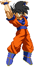

activate Hope Mode (LV2)
Activating the Hope Mode changes a few things in Goku's gameplay.
-Upon activation an empty Hope Bar is added to the screen.
-Upon activation you can keep holding the MP + MK buttons to keep filling up the Hope Bar.
-Remain able to perform Power Charge.
-Gain access to Hope Charge (detailed below).
-Gain access to the Spirit Bomb (detailed below).
-Kaioken Assault costs LV2 instead of LV3 and cancels the Hope Mode upon activation.
-Upon activation an empty Hope Bar is added to the screen.
-Upon activation you can keep holding the MP + MK buttons to keep filling up the Hope Bar.
-Remain able to perform Power Charge.
-Gain access to Hope Charge (detailed below).
-Gain access to the Spirit Bomb (detailed below).
-Kaioken Assault costs LV2 instead of LV3 and cancels the Hope Mode upon activation.


Hope Charge (a.k.a. Float)
The Hope Charge is reworked into a hover 'mode' of it's own. You can activate it by pressing any two Kick buttons together, whether you're standing, crouching or jumping.
You can even cancel into it from aerial attacks (and from the first hit of his Cartwheel Kick). In this reworked version, you remain stationairy upon initiating the mode
(completely ignoring gravity) and you stay in this hovering state until you get knocked out of it or use any of the exiting-options listed below:
-u+K (EX-OK)) = Mid-Air Flash Kick.
-f+K (EX-OK)) = Mid-Air Turtle Flip.
-b+K (EX-OK)) = Hurricane Kick.
-d+K (EX-OK)) = Slash-down Kick.
-b,b or b+2P = Backward Airdash Out
-f,f or f+2P = Forward Airdash Out.
-2K or d,d = Cancel Hope Charge.
-d,d+MP+MK = Spirit Bomb (detailed below).
-u+K (EX-OK)) = Mid-Air Flash Kick.
-f+K (EX-OK)) = Mid-Air Turtle Flip.
-b+K (EX-OK)) = Hurricane Kick.
-d+K (EX-OK)) = Slash-down Kick.
-b,b or b+2P = Backward Airdash Out
-f,f or f+2P = Forward Airdash Out.
-2K or d,d = Cancel Hope Charge.
-d,d+MP+MK = Spirit Bomb (detailed below).

Spirit Bomb
Channeling all the collected energy from the Hope Bar,
Goku forms it into a sphere and launches that across the screen.
This blast changes depending on how far the Hope Bar was filled prior.
Upon activating the Hope Mode, you can fire the LV1 version immediately.
This version fires a small sphere that deals some hits and then explodes, knocking the opponent away.
LV2 fires a slightly larger sphere that after dealing a bunch of hits,
shoots upwards and carries the opponent into the air, dealing even more hits.
LV3 produces the largest sphere and deals even more hits compare to the LV2 version
when the sphere rises into the air.
Goku's able to cancel the Hope Mode Activation into the Spirit Bomb, immediately throwing it. You can also cancel a LV1 Kamehameha (when it hits) into the Spirit Bomb.
Goku's able to cancel the Hope Mode Activation into the Spirit Bomb, immediately throwing it. You can also cancel a LV1 Kamehameha (when it hits) into the Spirit Bomb.